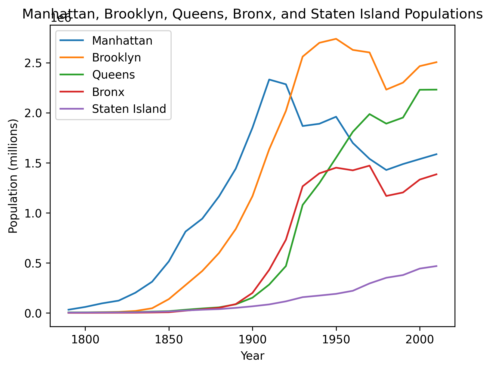

By Myles Pasetsky (Pd 9)
Question 1 - Choose a borough
This first graph was used to answer question. The borough I chose was Brooklyn, as I live there.
The y-axis is in millions (as noted by the 1e6 above the axis). The chart seems to make sense as taking
a look at the raw CSV data, there is a dip in Brooklyn's population in the 1960's.
Graph of Brooklyn's population from 1790-2010
Question 2 - all 5 boroughs
This second graph was used to complete the second question, which required all 5 boroughs. All the boroughs have a unique color noted in the legend.
This chart also seems to have worked because Brooklyn has the same line in this graph as it does for the one in the first question.

Graph of every NYC borough's population from 1790-2010